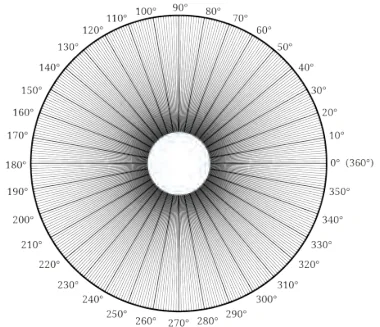
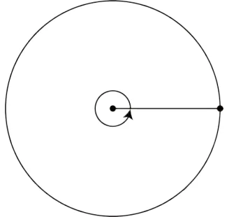
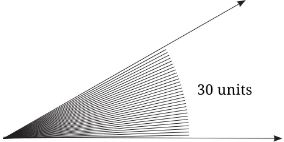
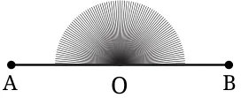
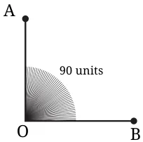
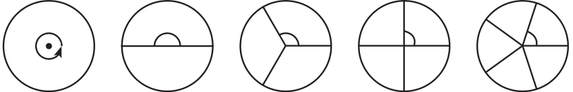
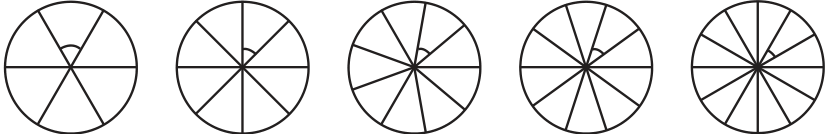

We have seen how to compare two angles. But can we actually quantify how big an angle is using a number without having to compare it to another angle? We saw how various angles can be compared using a circle. Perhaps a circle could be used to assign measures for angles?


To assign precise measures to angles, mathematicians came up with an idea. They divided the angle in the centre of the circle into
360 equal angles or parts. The angle measure of each of these unit parts is 1 degree, which is written as \(1 ^{\circ}\) . This unit part is used to assign measure to any angle: the measure of an angle is the number of \(1 ^{\circ}\) unit parts it contains inside it. For example, see this figure:

It contains 30 units of \(1 ^{\circ}\) angle and so we say that its angle measure is \(30 ^{\circ}\) . Measures of different angles: What is the measure of a full turn in degrees? As we have taken it to contain 360 degrees, its measure is \(360 ^{\circ}\) . What is the measure of a straight angle in degrees? A straight angle is half of a full turn. As a full-turn is \(360 ^{\circ}\) , a half turn is \(180 ^{\circ}\) . What is the measure of a right angle in degrees? Two right angles together form a straight angle. As a straight angle measures \(180 ^{\circ}\) , a right angle measures \(90 ^{\circ}\) .


A pinch of history
A full turn has been divided into \(360 ^{\circ}\) . Why 360? The reason why we use \(360 ^{\circ}\) today is not fully known. The division of a circle into
360 parts goes back to ancient times. The Rigveda, one of the very oldest texts of humanity going back thousands of years, speaks of a wheel with 360 spokes (Verse 1.164.48). Many ancient calendars, also going back over 3000 years - such as calendars of India, Persia, Babylonia and Egypt - were based on having 360 days in a year. In addition, Babylonian mathematicians frequently used divisions of 60 and 360 due to their use of sexagesimal numbers and counting by 60s. Perhaps the most important and practical answer for why mathematicians over the years have liked and continued to use 360 degrees is that 360 is the smallest number that can be evenly divided by all numbers up to 10, aside from 7. Thus, one can break up the circle into 1, 2, 3, 4, 5, 6, 8, 9 or 10 equal parts, and still have a whole number of degrees in each part! Note that 360 is also evenly divisible by 12, the number of months in a year, and by 24, the number of hours in a day. These facts all make the number 360 very useful. The circle has been divided into 1, 2, 3, 4, 5, 6, 8, 9 10 and 12 parts below. What are the degree measures of the resulting angles? Write the degree measures down near the indicated angles.

